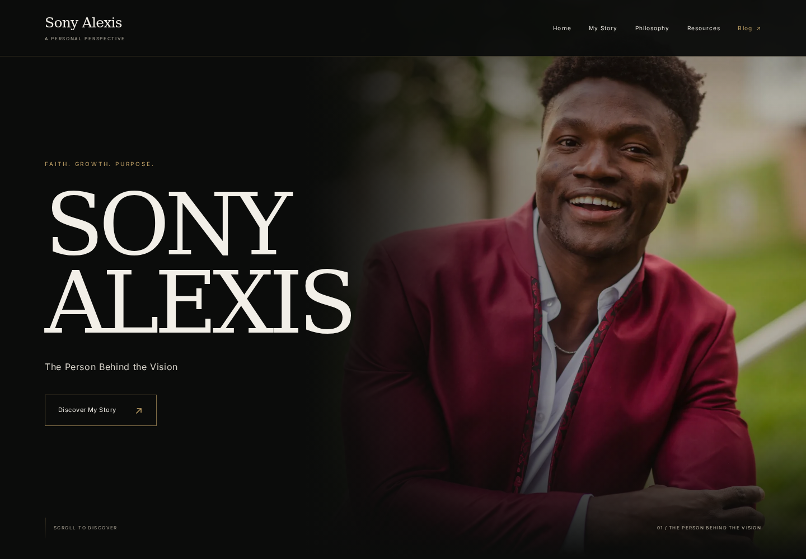
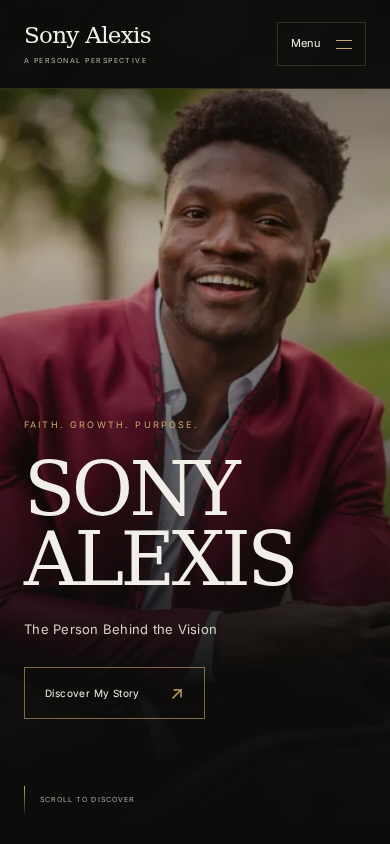
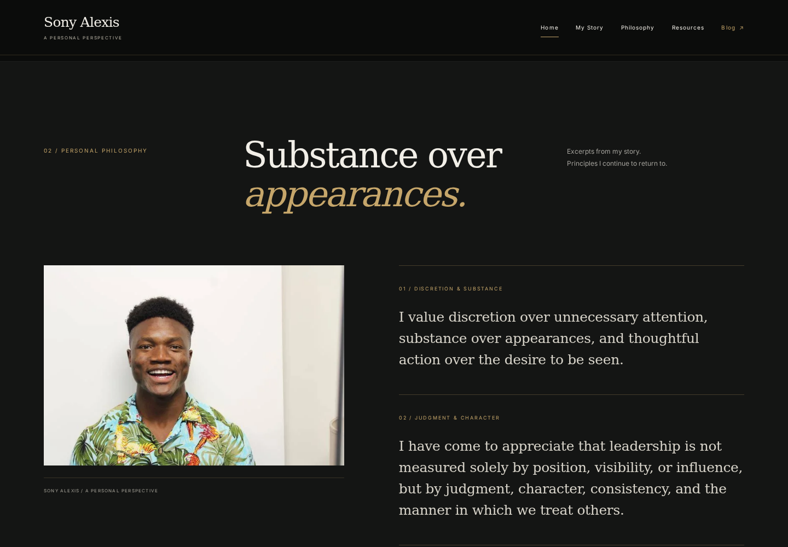
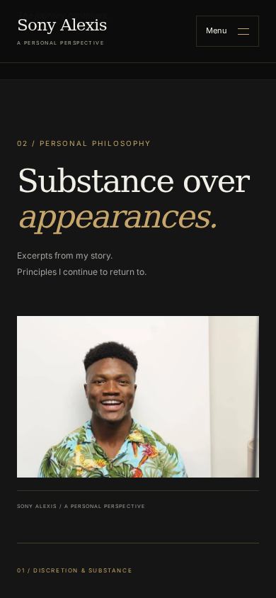
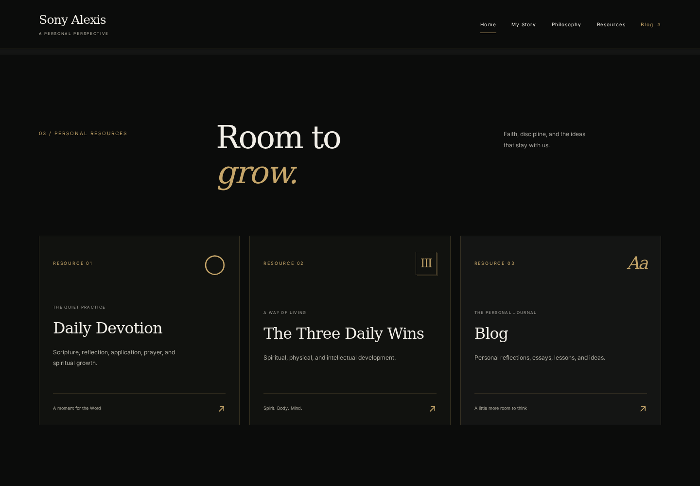
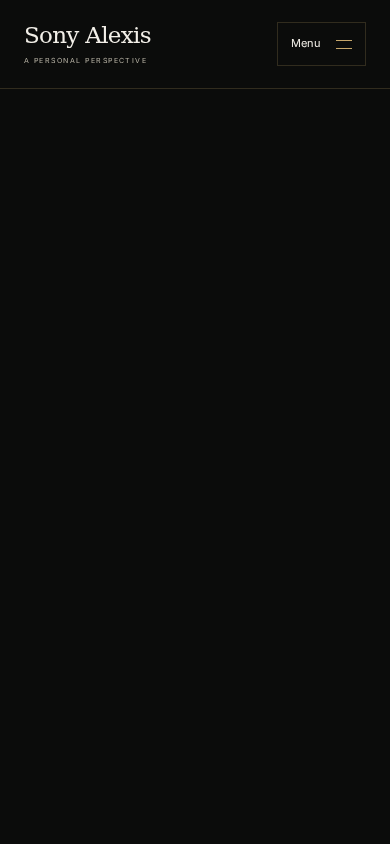
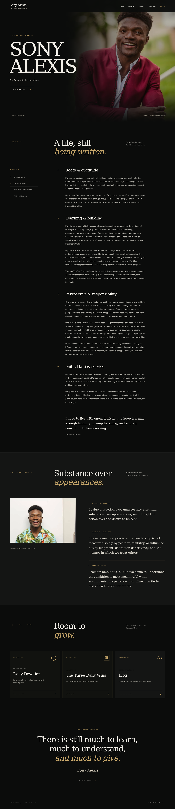
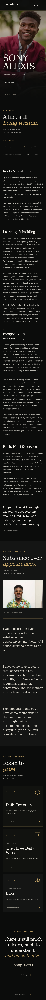
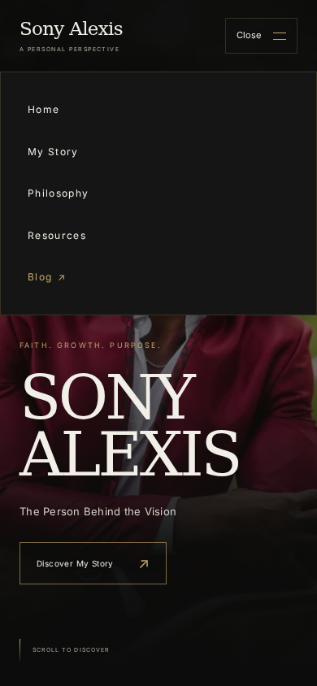
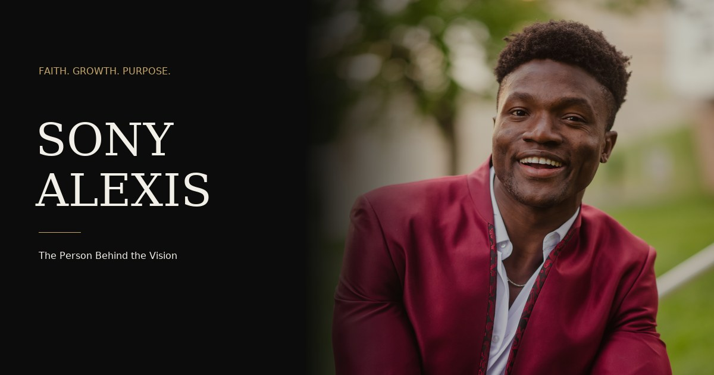

Sony Alexis — editorial profile design reviewLOCAL DESIGN REVIEW · NOT DEPLOYED
The person
behind the vision.
A new editorial Sony Alexis profile built around the owner’s real photographs, ten untouched biography paragraphs, exact philosophy excerpts and three functional personal resources. The corporate homepage and every venture/product page remain unchanged.
The working profile is at /sony/ on the port-8098 preview. These are actual Chromium screenshots of that implementation, not generated mockups. Deployment and photo-replacement instructions are in REPORT.md and DEPLOYMENT.md.
ACTUAL LOCAL BROWSER CAPTURES
The opening portrait

Desktop · 1440 px · open image for full resolution
Mobile · 390 px · open image for full resolutionACTUAL LOCAL BROWSER CAPTURES
Substance over appearances

Desktop · 1440 px · open image for full resolution
Mobile · 390 px · open image for full resolutionACTUAL LOCAL BROWSER CAPTURES
Three personal resources

Desktop · 1440 px · open image for full resolution
Mobile · 390 px · open image for full resolutionACTUAL LOCAL BROWSER CAPTURES
The complete editorial profile

Desktop · 1440 px · open image for full resolution
Mobile · 390 px · open image for full resolutionThe mobile navigation

The social preview asset
1200 × 630, composed from the actual owner portrait. No invented likeness or stock image.
